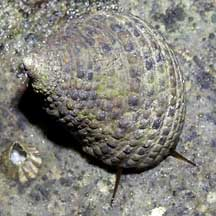
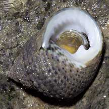
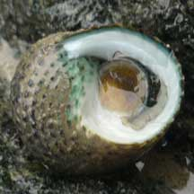

|
|
| shelled snails text index | photo index |
| Phylum Mollusca > Class Gastropoda > Family Trochidae |
| Toothed
top shell snail Monodonta labio Family Trochidae updated Sep 2020 Where seen? This snail with a tooth in its shell opening is commonly seen on many of our shores. Often seen in groups on boulders, stones and seawalls on many of our shores. It is more active at night. Features: 3-4cm. Shell thick heavy, an asymmetrical cone with spirals of rounded bumps. Colour usually grey or greenish grey. Mono donta means 'one-toothed'. Indeed, there is a single large tooth-shaped structure at the shell opening which is white and smooth. Operculum, thin, made of a horn-like material with concentric rings, yellow. The flexible operculum allows the animal to withdraw deep into the coils of the shell. Hopefully, safe from prying claws of hungry crabs. Body pale, large foot, edge of the mantle fringed with long tentacles. A pair of long tentacles at the head. Sometimes confused with the Turban snail (Family Turbinidae) which has a shell with more distinct whorls and a thick, chalky operculum. While many Top snails have a more conical shell and a thin operculum made of a horn-like material. Here's more on how to tell apart turban and top shell snails. |
 Kusu Island, May 05 |
 |
 St. John's Island, Aug 05 |
| Toothed top shell snails on Singapore shores |
On wildsingapore
flickr
|
| Other sightings on Singapore shores |
 Pulau Sudong, Dec 09 Photo shared by Ivan Kwan on his flickr. |
Links
References
|